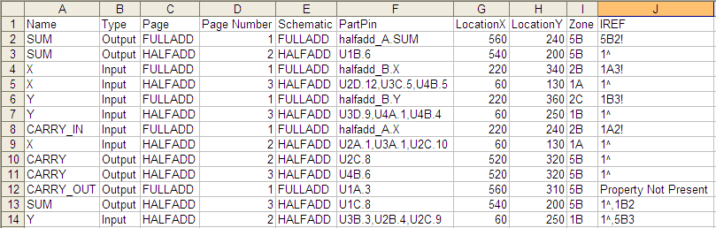
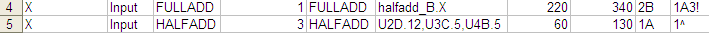

When you create the intersheet references for a design, the
Intersheet References dialog box contains an option to
create a report file (in the .csv format). This report file
provides a complete list of all the connected signals on
your design.
The following report file sample is generated from the
FULLADD design.

As an example, see the following two selected rows from
the report:

| Name | name of the port or off-page connector |
|---|---|
| Type | signal type |
| Page | the page on which the port or off-page connector exists |
| Page Number | defined by the Page Number property of the title block on that respective page |
| Schematic | schematic folder containing the specific pages |
| PartPin | the part and pin combination connected to the port or off-page connector |
| LocationX | the X-axis location on the schematic page grid for the port or off-page connector |
| LocationY | the Y-axis location on the schematic page grid for the port or off-page connector |
| Zone | the zone location on the schematic page grid for the port or off-page connector |
| IREF | is the reference of the connected signal. Notice in the first item the reference is 1A3!. This means that the connected signal exists on the 1A zone of page 3 of the design and is one level lower in the hierarchy |
|
|
After you run the Intersheet References command, with the option to generate a .csv output file, this file will be available in the Outputs folder in the Project manager. |